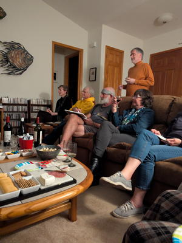
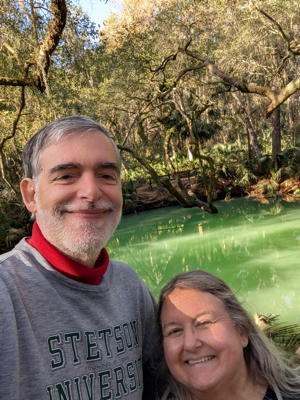

2025 Holiday Web Page

| Erich and Margie's 2025 Holiday Web Page | |
December We went to the beach on Christmas, as is our tradition. Erich won a free membership to chess.com for a month. Erich enjoyed listening to Bob's band. We celebrated New Year's Eve alone and fairly quietly.
January Erich got 4th in Bill & Judi's annual bocce tournament. Erich found out that Friedman numbers are being used by Jewish numerologists to pick out verses from the Torah to find the ultimate truth. We went to a happy hour at Adele and Jim's and got to throw axes. We celebrated the Chinese New Year at Missy's place.
Monet Erich's friend Monet visited from Oregon. We went to the space center, a bunch of art museums and the New Smyrna art festival, St. Augustine for a mixture of historical and musical adventures, and all the springs in the area for make-your-own pancakes, kayaking, and manatees. We also watched skydivers fall from the sky during lunch at the Perfect Spot, did a campus tour, and hosted a home trivia.
Barb and Peter Erich's oldest friend Barb and her fiancé Peter visited from Ireland. We couldn't do much due to Barb's ankle injury, but we visited some springs, saw skydivers, visited the Audubon Center for Birds of Prey, and had some fine meals.
February On a walk, Margie found an old woman wandering in our neighborhood, and brought her back home. Erich watched season 5 of "Star Trek - Lower Decks".
March
April
May
June
July
August
September
October
November
December
Erich's holiday puzzles can be found here. You can see our archive of our previous holiday web pages here.

 